Technical Documents · ISL TD2027EPO
Edition v1.0, 2027 (version 1.0) · effective 1 January 2027 · current
Retrieved on 26 November 2026 from https://www.wada-ama.org/sites/default/files/2026-09/isl_td2027epo_v1.0_eng_clean_version.pdf
Editions: v1.0, 2027 (current) · v1.0, 2024 · v1.0, 2022 · v2.0, 2021 · v1.0, 2014 · v1.0, 2013 · v2.0, 2009 · v2.0, 2007 · v1.0, 2005
p. 1
Harmonization of Analysis and Reporting of Erythropoietin (EPO)-Receptor Agonists (ERAs) and Transforming Growth Factor-Beta (TGF-β) Signalling Inhibitors by PolyAcrylamide Gel Electrophoretic (PAGE) Analytical Methods
1.0 Introduction
This Technical Document (TD), which constitutes an integral part of the International Standard for Laboratories (ISL[1]), has been established to harmonize the detection and reporting of erythropoietin (EPO) and other EPO-receptor agonists (ERAs) by Laboratories when analyzed using PolyAcrylamide Gel-Electrophoretic (PAGE) Analytical Methods. Whenever other techniques are available [e.g., Liquid Chromatography-Mass Spectrometry (LC-MS)], reference to the applicable ISLTD(s) is also made.
All Laboratories shall apply the requirements established in this ISLTD in the routine performance of PAGE Analytical Methods to identify ERAs in urine or blood [plasma/serum/Dried Blood Spots (DBS)] Samples.
For the purposes of this ISL TD, the following abbreviations, acronyms and trademarks are used:
- CERA (Mircera ® , Roche): Continuous Erythropoietin Receptor Activator, the erythropoietin analogue known by its International Non-proprietary Name (INN) as pegserpoetin, a methoxy-pegylated derivative of epoetin-β. Biosimilars of this preparation have also been reported (e.g., Erypeg, INTAS Pharmaceuticals Ltd).
- EPO: Erythropoietin.
- EPO-Fc: Recombinant fusion protein comprising EPO linked to human immunoglobulin Fc domain (e.g., Efepoetin-α (Efesa PT Kalbe Genexine Biologics).
- bEPO: Endogenous erythropoietin as observed in human blood.
- dEPO: Darbepoetin. Modified forms of erythropoietin with additional glycosylation sites, including Aranesp®[2], which is known by its INN as darbepoetin-α, and biosimilar products (e.g., CRESP, Nesbell, JCR, SANWA, etc.).
- ERAs: Erythropoietin-Receptor Agonists, i.e., erythropoietin (EPO), recombinant erythropoietins (rEPO) and EPO-based constructs (e.g., dEPO, CERA, EPO-Fc).
- IEF-PAGE: Isoelectric focusing - polyacrylamide gel electrophoresis.
- SAR-PAGE: Sodium N-lauroylsarcosinate ('sarcosyl') Polyacrylamide Gel Electrophoresis.
- SDS-PAGE: Sodium Dodecyl Sulfate PolyAcrylamide Gel Electrophoresis.
- rEPO: Recombinant erythropoietin. These pharmaceutical substances are known by their INN as "epoetin". The different preparations are identified by a Greek letter, e.g., epoetin-α, -β, -δ, -w. Other preparations (e.g., generics or copies) referred collectively as "rEPO biosimilars" may have differing isoform profiles not exactly matching those already referenced.
- TGF-β: Transforming Growth Factor beta (TGF-β) Signaling Inhibitors (e.g., Luspatercept, Sotatercept, Elritercept).
- uEPO: Endogenous erythropoietin as observed in human urine.
p. 2
2.0 Analytical Testing for ERA(s)
The Laboratory shall follow the initial storage and Sample aliquoting procedures for both "A" and "B" Samples described in ISL Article 5.3.3[1]. This includes the order of analysis when additional analyses are to be performed on whole blood Samples or their plasma fractions.
To reduce the possible degradation of ERAs, it is recommended that, if requested, the ERA "B" Sample Confirmation Procedure (CP), irrespective of the Sample matrix, be performed within one (1) month of reporting the Adverse Analytical Finding (AAF) for the "A" Sample.
2.1 Pre-Analytical Procedure
a) Urine, serum, or plasma Aliquots intended for ERA analysis should be transferred to frozen storage to minimize potential degradation if the analysis is not initiated within twenty-four (24) hours of aliquoting.
b) As soon as an ERA Presumptive Adverse Analytical Finding (PAAF) is confirmed, the Laboratory should transfer both "A" and "B" Samples to frozen storage at -70ᵒ C or below.
Dried Blood Spots (DBS)[3-5] Sample storage and aliquoting shall follow the directives of the ISL TD DBS[6].
2.2 PAGE Analytical Methods' Specifications
2.2.1 General Specifications
a) Sample Preparation
For both the Initial Testing Procedure (ITP) and the CP, immunopurification shall be performed prior to the application of any PAGE Analytical Method[7-12]. Different antibodies shall be used for immunopurification and downstream detection.
b) Electrophoretic Separation
To be performed by SAR-PAGE or SDS-PAGE or IEF-PAGE[13-18] See Table 2 for details.
c) Immunoblotting
i. Immunoblotting shall be performed by electroblotting to optimize the transfer of the ERA(s).
ii. Single- or double-blotting may be applied for the ITP and CP. However, when single-blotting is applied, a cross-reactivity minimized protocol shall be used (e.g., using the biotinylated monoclonal mouse anti-human EPO clone AE7A5)[13,19,20].
d) Detection
Only 16-bit grayscale TIFF-files and no images in which the sample of interest is overexposed shall be used.
p. 3
2.2.2 SAR-PAGE[13, 21-23] and SDS-PAGE[15, 24] Specifications
a) Electrophoretic Separation
i. Vertical electrophoresis shall be applied.
ii. 10% acrylamide (%T) gels shall be used for ERA separation.
iii. For SAR-PAGE, the gel shall be SDS-free. SDS in sample and running buffers is replaced by sodium N-lauroylsarcosinate.
iv. When using SDS-PAGE in the ITP, or for the CP of CERA and EPO-Fc, an appropriate carrier protein (e.g., casein, insulin) shall be added to the immunopurified eluate before the electrophoretic separation.
v. For the ITP and CP of rEPO, Epoetin-δ (Dynepo) or a preparation of rEPO (e.g., preparation of Epoietin-α or -β) shall be used as a reference for placing a rEPO migration cut-off line.
vi. dEPO, CERA and EPO-Fc shall be present to define other ERAs' electrophoretic behavior in the ITP. For the CP, a preparation(s) containing at least the ERA(s) to be confirmed shall be included.
b) Immunoblotting
When using SDS-PAGE in the ITP or for the CP of CERA or EPO-Fc, a discontinuous buffer system (e.g., CAPS buffer) or an alternative buffer system ensuring the effective transfer of these large biomolecules shall be used[24].
2.2.3 IEF-PAGE Specifications
a) Electrophoretic Separation
IEF-PAGE shall be performed in a pH range compatible with the Isoelectric Points (pI) of the ERA(s) under analysis. IEF-PAGE shall be performed under denaturing conditions (approximately 7 M urea).
2.3 Analytical Testing Strategy
2.3.1 PAGE Analytical Methods' Performance Requirements
The Limit of Detection (LOD) of the PAGE Analytical Methods used for the ITP and the CP (including ERA immunopurification, electrophoretic separation and immunodetection), as estimated in a maximum volume of matrix during validation (i.e., ≤ 15 mL of urine; ≤ 0.5 mL of serum or plasma; or capillary blood obtained from one (1) DBS spot/pebble (ca. 20 µL) shall not be higher than (≤) 50% of the corresponding Minimum Required Performance Level (MRPL) (see Table 1).
p. 4
Table 1. MRPL of ERAs analyzed by PAGE methods (in Sample matrix)
| ERA | Matrix of Analysis: Urine | Matrix of Analysis: Serum / Plasma / DBS |
|---|---|---|
| rEPO | 1 IU/L* | 30 IU/Lᵃ |
| dEPO | 1 pg/mL | 30 pg/mL |
| CERAᵇ | 5 pg/mL | 150 pg/mL |
| EPO-Fc | 5 pg/mL | 150 pg/mL |
a. Defined based on content of rEPO in samples containing both rEPO and endogenous EPO (mixed band on gel).
b. CERA is better detected in blood matrices (serum/plasma/DBS) than in urine.
2.3.2 Application of PAGE Analytical Methods
The different PAGE Test Methods (SDS-, SAR-, or IEF-PAGE) to be applied as either ITP and/or CP for the different types of ERAs are detailed in Table 2 below.
Table 2. Analytical Testing strategy for ERAs in urine and blood (serum/plasma/DBS) by PAGE Analytical Methods
| ERA | ITPᵃ | CP |
|---|---|---|
| rEPO | SAR- or SDS-PAGE | SAR- or SDS-PAGE (± IEF-PAGEᶜ) |
| dEPO | SAR- or SDS-PAGE | SAR- or SDS-PAGE (± IEF-PAGEᶜ) |
| CERA | SAR- or SDS-PAGE (± IEF-PAGEᵇ) | SAR- or SDS-PAGE (± IEF-PAGEᵈ) or IEF-PAGEᵉ |
| EPO-Fc | SAR- or SDS-PAGE (± IEF-PAGEᵇ) | SAR- or SDS-PAGE (± IEF-PAGEᵈ) or IEF-PAGEᵉ |
a. SAR- or SDS-PAGE shall be applied for the ITP. The same PAGE Analytical Method (i.e., SAR- or SDS-PAGE) may be applied for both the ITP and the CP.
IEF-PAGE is less sensitive than SDS-/SAR-PAGE for rEPO and dEPO detection (e.g., IEF-PAGE is less likely to detect micro-dosing)[10,25] - therefore, IEF-PAGE shall not be used as the "primary" ITP in any case.
b. The Laboratory, at its discretion, may apply IEF-PAGE as a complementary ITP for difficult to interpret SDS-/SAR-PAGE ITP results for CERA or EPO-Fc before proceeding to the confirmation of a PAAF for these ERAs.
c. The Laboratory may apply IEF-PAGE, under certain circumstances and upon second opinion Expert request, as an additional confirmation method for rEPO and dEPO to obtain complementary scientific evidence for interpretation of confirmatory SDS-/SAR-PAGE results that may be characterized by unusual ERA migration patterns (e.g., extended smear in rEPO region, presence of extra unspecific bands).
d. The Laboratory may apply IEF-PAGE, at its discretion or upon second opinion Expert request, as an additional confirmation method for CERA and EPO-Fc to obtain additional scientific evidence for interpretation of confirmatory SDS-/SAR-PAGE results that may be characterized by unusual ERA p. 5 migration patterns (e.g., presence of extra or unspecific bands or Sample ERA migration not coinciding with that of the ERA reference standard used).
e. The Laboratory should consider the use of IEF-PAGE as a CP for CERA and EPO-Fc if there is evidence from its application as an additional ITP that allows the definitive identification of the ERA(s) present in the Sample.
2.3.2.1 Initial Testing Procedure Requirements
a) The ITP shall incorporate, as a minimum, the PAGE analysis of the following:
i. "A" Sample Aliquot.
ii. Negative Quality Control (NQC) sample.
QC samples are samples prepared in the Sample matrix (except DBS, for which spotted venous blood may be used as QC), which undergo the same analytical procedure as the Sample being subject to Analytical Testing (e.g., sample preparation procedure, instrumental analysis, etc.).
iii. Reference Standard Solutions.
Appropriate preparation(s) of ERA standards used as reference to define apparent molecular mass of ERAs (SAR- or SDS-PAGE) or basic, acidic and endogenous areas on the gel (IEF-PAGE).
2.3.2.2 "A" Confirmation Procedure Requirements
When the ERA signal in the ITP is too low to ensure reliable identification, the Laboratory shall explore measures to improve the signal (e.g., perform the CP analysis using a larger Aliquot volume than the one used in the ITP or improve the signal acquisition and contrast).
a) The "A" CP shall depend on the ERA(s) presumptively found and the methodology employed for the ITP (see Table 2).
b) The "A" CP shall differ from the ITP. This difference may be achieved by, for example, one (or more) of the following:
i. Application of a different Sample immunopurification procedure, i.e., applying a procedure with a different capture antibody.
ii. Use of a different electrophoretic separation technique (e.g., separation by molecular weight (SAR/SDS-PAGE) vs. separation by pI (IEF-PAGE), where applicable.
iii. Use of a different detection antibody[18].
c) The "A" CP shall incorporate, as a minimum, the PAGE analysis of the following:
p. 6
i. "A" Sample confirmation Aliquot.
ii. NQC sample(s) prepared in the Sample matrix with a sufficient endogenous EPO signal intensity to be clearly identifiable on the gel.
iii. Positive Quality Control (PQC) sample(s) prepared in the Sample matrix containing the appropriate ERA(s) under confirmation.
The electrophoretic behavior of the ERA(s) in the PQC may not match exactly that of the ERA(s) in the Sample. For example:
- Different kinds of rEPOs, dEPO, CERA, or EPO-Fc preparations may have different migration patterns on the gel.
- The ratio of rEPO to endogenous EPO may differ depending on rEPO dosage, route of administration or time after Sample collection (see Figure 2).
- The migration of the Sample's ERA(s) on the gel may vary according to the route of administration[26].
- On occasions, a reference standard matching the exact migration pattern for the ERA detected in the Sample may not be available.
However, neither of these conditions necessarily invalidates an AAF for the ERA(s) detected in the Sample
iv. For rEPO "A" CP, when needed and based on the results from the ITP, the volume of the confirmation Aliquot and/or the ERA content/volume of the NQC and/or the PQC shall be adjusted to ensure appropriate ERA intensity signals (i.e., endogenous EPO ± rEPO) to facilitate the interpretation of results.
v. Reference Standard Solutions: Appropriate preparation(s) of ERA standards used as reference to define apparent molecular mass (SAR-PAGE, SDS-PAGE) or basic, acidic and endogenous areas on the gel (IEF-PAGE).
d) All lanes in the CP gel (Aliquot, NQC, PQC, reference standards) shall be flanked by empty lanes (i.e., lanes loaded only with sample buffer without any added carrier protein or molecular weight markers).
p. 7
2.3.2.3 "B" Confirmation Procedure Requirements
a) For the "B" Sample CP, the Laboratory shall use the same Analytical Testing Procedure(s) used for the "A" Sample CP, with the following exceptions:
i. If more than one PAGE CP was used for the confirmation of CERA or EPO-Fc in the "A" Sample, the use of any one of the two (2) CPs leading to conclusive results is sufficient to confirm the presence of the ERA(s) in the "B" Sample.
ii. When IEF-PAGE is used upon second opinion Expert request as an additional method to SAR- or SDS-PAGE for the "A" CP of a rEPO or dEPO finding, only the applied SAR- or SDS-PAGE method shall be used for the "B" CP.
b) The "B" CP is subject to the same requirements of the "A" CP [see Articles 2.3.2.2 c) and d)].
2.3.3 Other (non-electrophoretic) Analytical Methods
a) For the CP of specific ERAs (e.g., EPO-Fc), the Laboratory may also apply, at its discretion, substance-specific Analytical Methods (e.g., immunoassays), as additional scientific evidence to arrive at a conclusion[27].
b) In all cases, where a Fit-for-Purpose mass spectrometry (MS)-based Analytical Method is available[28], it can be used for either or both the ITP and the CP(s). In that case the identification criteria described in the ISL TD IDCR[29] shall be met.
2.4 Evaluation and Interpretation of Results
2.4.1 Acceptance criteria
The acceptance criteria for the SAR-, SDS-PAGE and IEF-PAGE procedures define the requisites that an image shall fulfil to allow the application of the identification criteria to ascertain the presence of ERAs.
Spots, areas of excessive background or of absent signal (e.g., bubbles) in a lane that significantly interfere with the application of the identification criteria shall invalidate the lane.
2.4.2 Identification Criteria
2.4.2.1 SAR- or SDS-PAGE
For SAR- and SDS-PAGE, ERAs can be distinguished from endogenous EPO (uEPO, bEPO) based on their characteristic band shape and different apparent molecular mass.
p. 8
The migration behaviour (band) of each ERA, i.e., its position and shape (width, focused or more diffused) can be used to confirm the identity and/or exogenous origin of the substance.
The position of the band apex (as determined by the lane profile plot retrieved by the image processing software) or the boundaries of the width of the band can be used to ascertain that its position and shape differ from the position of endogenous EPO in the NQC, as illustrated in Fig. 1.
Additional Figures showing the SAR- or SDS-PAGE separation of other ERA biosimilars are presented in Annex A of this ISL TD.
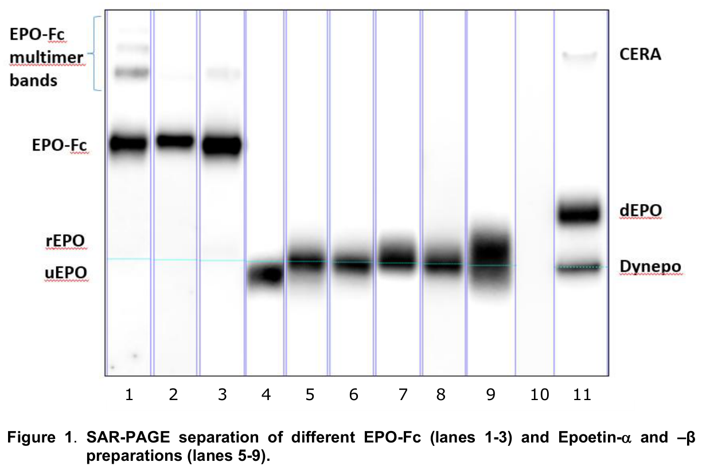
Figure 1. SAR-PAGE separation of different EPO-Fc (lanes 1-3) and Epoetin-α and -β preparations (lanes 5-9).
- lanes 1-3: EPO-Fc biosimilar standards (lane 1: Prospec; lane 2: Sino Biological; lane 3: Cell Sciences).
- lane 4: NQC - Blank urine sample containing uEPO.
- lanes 5 - 9: rEPO biosimilar standards (lane 5: ShanpoetinTM ; lane 6: Beijing 4 Rings; lane 7: Erypo ®; lane 8: NeoRecormon ® ; lane 9: Wepox.
- lane 10: Empty lane.
- lane 11: Standard mix of ERA standards: Dynepo (Epoetin-δ), dEPO (darbepoetin-α) and CERA.
The dotted blue line indicates the position of the band apex of Dynepo.
p. 9
The following identification criteria define the requisites that the SAR- or SDS-PAGE image from the CP shall fulfil to consider an AAF for the presence of ERAs with a structure related to EPO (rEPO, dEPO, CERA, EPO-Fc):
A. Single ERA Band(s) Detected
a) rEPO (see also Annex D - EPO c*.577del* Variant)
i. Epoetin-α and -β as well as the rEPO biosimilars have characteristic band shapes ("broad band") and different (typically higher) apparent molecular masses than uEPO/bEPO (Fig. 1).
To consider an AAF for rEPO, the smear characteristic of the band shape for rEPO shall extend beyond the position line defined by the band apex of Epoetin-δ (Dynepo) (Fig. 1) or, alternatively, beyond the position line defined by the band apex of a reference preparation of rEPO (e.g., Eprex).
ii. Epoetin-δ (Dynepo) has a characteristically narrow band shape and higher apparent molecular mass than endogenous uEPO/bEPO. Due to the sharper band (albeit a faint smear may also be present in both the Dynepo standard and Dynepo administration samples, representing glycoforms of higher mass), Epoetin-δ can be also differentiated from other rEPOs (-α and -β as well as the biosimilars) (Fig. 1).
To consider an AAF for Epoetin-δ, the band apex line of the ERA in the Sample shall correspond with the band apex line in the Epoetin-δ reference preparation.
b) dEPO, CERA, EPO-Fc dEPO, CERA and EPO-Fc (Fig. 1) can be distinguished from endogenous EPOs (uEPO, bEPO) as well as from rEPOs based on their higher apparent molecular masses.
To consider an AAF for any of these Prohibited Substances, the apparent molecular mass of the ERA band(s) shall correspond to the apparent molecular mass of the band(s) from the dEPO, CERA or EPO-Fc reference preparation. Preparations of biosimilars can display differences in mobility and band width[30] (see Figs. A1 - A3 in Annex A).
p. 10
B. Mixed Bands from Different ERA(s) Detected
a) In the case of rEPO, a mixed band consisting of endogenous EPO (uEPO, bEPO) and rEPO not completely resolved can be detected: the band shape resembles that of the rEPO plus parts or the total of the uEPO/bEPO band.
The appearance of a mixed band changes with the source of the rEPO preparation (see Figs. 1 and 2) as well as with the relative amount of rEPO and uEPO/bEPO present in the Sample, as occurs at different times after rEPO administration (Fig. 2).
b) A diffuse or faint area of the rEPO band above the corresponding endogenous band, which extends beyond the position line defined by the band apex of Epoetinδ (Dynepo) (or another Epoetin preparation with the same band apex position), is also indicative of the presence of rEPO (see Figs. A2 and A3 in Annex A).
- lane 1: Standard mix of ERA standards (Dynepo, dEPO).
- lane 2: NQC - Blank urine sample containing uEPO.
- lanes 3-5: Mix bands of Retacrit and uEPO in urine samples collected at different points after Retacrit administration (isolated/smeared double bands of uEPO + Retacrit may occur); lane 6: Retacrit reference standard[26].
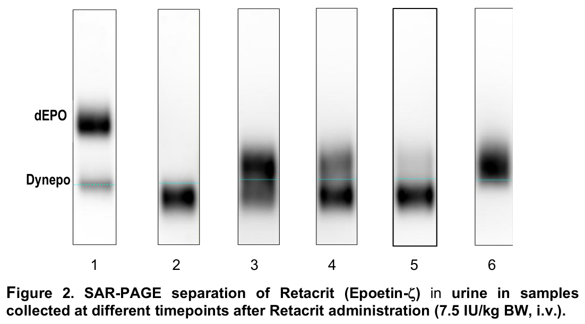
Figure 2. SAR-PAGE separation of Retacrit (Epoetin-ζ) in urine in samples collected at different timepoints after Retacrit administration (7.5 IU/kg BW, i.v.).
The dotted blue line indicates the position of the band apex of Dynepo.
p. 11
C. Multiple Separated ERA Bands Detected
Multiple bands corresponding to different ERAs (e.g., u/bEPO, rEPO, dEPO, CERA and EPO-Fc) or to the same ERA (e.g., EPO-Fc) are detected in the same Sample (Fig. 3). The individual identification criteria described for each ERA shall apply.
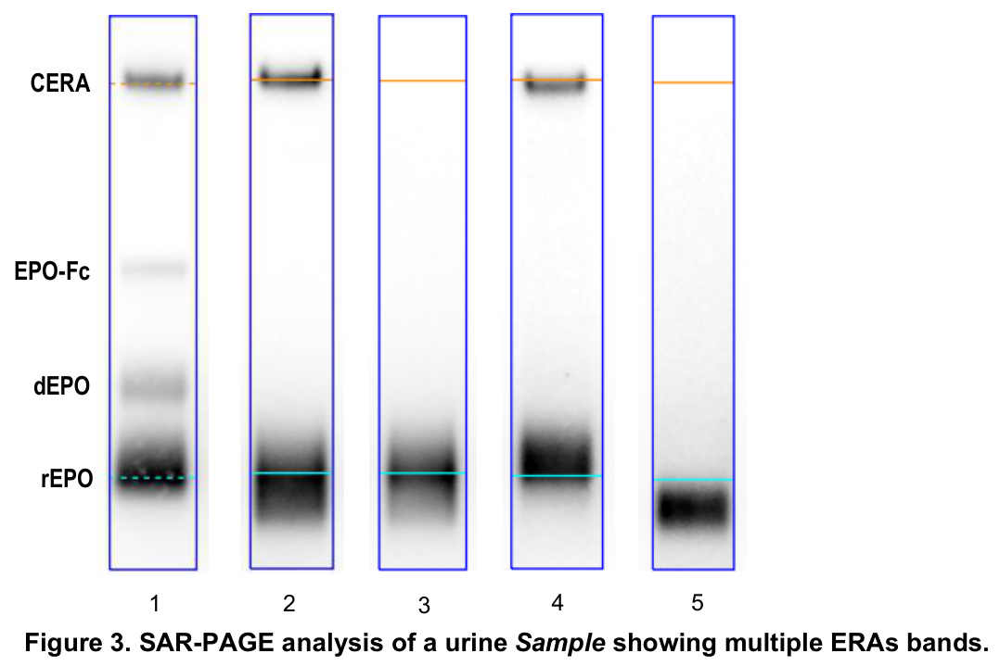
Figure 3. SAR-PAGE analysis of a urine Sample showing multiple ERAs bands.
- lane 1: Standard mix of ERA standards: rEPO (epoetin-α, EPREX), dEPO, EPO-Fc (Prospec), CERA.
- lane 2: PQC1 - Urine sample spiked with rEPO and CERA.
- lane 3: PQC2 - Urine sample spiked with rEPO.
- lane 4: Urine Sample containing rEPO and CERA.
- lane 5: NQC - Blank urine sample containing uEPO.
The dotted blue line indicates the position of the band apex of rEPO (epoetin-α, EPREX), and the dotted orange line indicates the position of the band apex of CERA.
2.4.2.2 IEF-PAGE
Fig. 4 illustrates examples of IEF-PAGE gel images of different ERA reference standards; in a Sample, the presence of endogenous EPO or a combination of endogenous EPO and ERA(s) may also be detected. For some ERAs, the iso-electrophoretic pattern in Samples may be different from that of ERA standards or PQC samples (e.g., presence of different number of bands, slightly different focusing profile on gel) depending on the source of the biosimilar preparation analyzed.
p. 12
a) rEPO
The image shall fulfill the following identification criteria to consider an AAF (if used as complementary CP) for rEPO:
i. The IEF-PAGE profile deviates from that of endogenous EPO; and
ii. In the basic area, there must be at least 3 acceptable, consecutive bands; and
iii. For urine Samples: The two (2) most intense bands measured by densitometry shall be in the basic area.
iv. For blood (serum, plasma) Samples: The intensity of the two (2) most intense bands measured by densitometry in the basic area shall be twice or more than (≥ 2x) the most intense band in the endogenous area.
b) dEPOs
The image shall fulfill the following identification criteria to consider an AAF for the presence of dEPO:
i. In the acidic area, there must be at least 3 acceptable, consecutive bands assigned as "A", "B", "C" or "D".
ii. If there is endogenous signal, then at least one band in the "acidic area" must be more intense than the last band of the endogenous area (e.g., band ε in Fig. 4).
c) CERA
In the basic area, there must be at least 4 consecutive bands corresponding with the CERA preparation used as reference (Figs. 4A and 4B).
d) EPO-Fc
In the basic area, there must be at least 4 consecutive bands corresponding with the EPO-Fc preparation used as reference (Fig. 4B and Fig A5 in Annex A).
p. 13
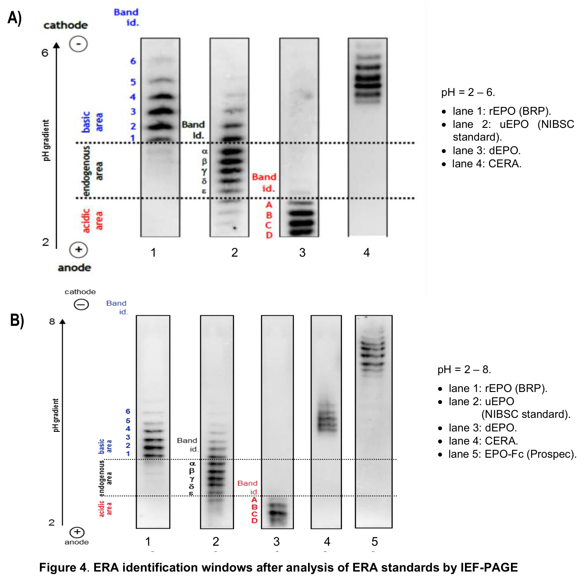
Figure 4. ERA identification windows after analysis of ERA standards by IEF-PAGE
The bands of rEPO, uEPO, and dEPO in the basic, endogenous, and acidic areas, respectively, are identified by numbers, Greek letters, and Latin capital letters, respectively.
p. 14
3.0 Review and Interpretation of ERA Results
3.1 Adverse Analytical Finding
To conclude that an ERA finding constitutes an AAF, results from the CP(s) shall fulfill the applicable identification criteria described in this ISL TD.
When the Laboratory applies an additional Analytical Method for confirmation of ERA(s), the finding shall be concluded as an AAF if the results of the complementary confirmatory Analytical Method fulfill the applicable identification criteria described in this ISL TD.
3.2 Atypical Finding
A finding shall be concluded as an ATF for ERA(s) when the results of the CP(s) do not allow to conclusively establish the presence of the ERA(s) in the Sample based on the applicable identification criteria described in this ISL TD. This includes when an additional confirmation Analytical Method is applied upon request by second opinion Expert(s) to obtain additional scientific evidence, and it does not confirm the presence of ERA(s) in the Sample (for example, when IEF-PAGE is applied as an additional Analytical Method to obtain complementary evidence of the presumptive presence of rEPO).
3.3 Negative Finding
When the ERA results from the ITP(s) or from CP(s) applied to the confirmation of PAAF(s) conclusively do not fulfill the applicable identification criteria described in this ISL TD, the results of the ERA analysis shall be concluded as a Negative Finding. This includes when no electrophoretic band is detected in the Sample's gel lane [i.e., no band signal for endogenous EPO and any of the exogenous ERAs].
4.0 Reporting ERA Findings
4.1 Negative ERA Findings not Subjected to Second Opinions
a) For Samples with negative ERA ITP results, or with non-confirmed ERA PAAF(s), as determined by the Laboratory, the Laboratory shall report the finding as a Negative Finding in ADAMS without the need to obtain a second opinion.
b) The Laboratory shall recommend the Testing Authority (TA) to perform ERA analysis on previously collected Sample(s) (for example, if blood and urine Samples have been collected during the same Sample Collection Session) or conduct Target Testing of the Athlete for ERA analysis in the following situations:
i. If a Sample is associated with a non-confirmed PAAF for ERA(s).
ii. When reporting a Negative Finding for ERA(s) because no electrophoretic ERA band (neither endogenous nor exogenous) is detected in the Sample's gel lane.
[Comment to Article 4.1 b)-ii: In these cases, the Laboratory shall also include a comment in the Sample's Test Report in ADAMS specifying the absence of ERA signals and if there is any sign of microbial contamination or p. 15 suspicion of proteolytic activity in the Sample (e.g., disappearance of ERA signal between ITP and the CP) [3134]) . For example, the Laboratory may comment: "No electrophoretic ERA band signal was detected in the Sample" or "The Sample shows signs of microbial contamination that may have affected the stability of the ERA(s)".]
4.2 ERA Findings Subjected to Second Opinions
Before reporting a confirmed ERA result as an AAF or ATF, the Laboratory shall seek second opinions from Experts of the WADA EPO Working Group (see Annex B). The Laboratory should report the finding as AAF, ATF, or a Negative Finding in ADAMS in accordance with the second opinions provided. However, the Laboratory is ultimately responsible for deciding how to report the finding in accordance with its documented Management System procedures.
[Comment to Article 4.2: In principle, the Laboratory should report the ERA finding in accordance with the conclusion reached through the second opinion process. However, in exceptional circumstances, the Laboratory may decide to depart from that conclusion and report the finding differently from the conclusion of the second opinion providers if there are specific justifications, at the discretion of the Laboratory, to do so.]
4.2.1 Adverse Analytical Finding
The ERA finding should be reported as an AAF when both second opinion Experts conclude that an ERA(s) is present in the Sample (see Annex B):
a) rEPO rEPO findings may be subject to an investigation according to Annex D, as determined by WADA. The investigation will establish whether the apparently positive finding is associated with the expression of VAR-EPO. In such a case, the Laboratory shall not report the result as an AAF until this investigation is concluded and the Laboratory is instructed to report by WADA.
b) dEPO, CERA, or EPO-Fc
The presence of dEPO, CERA, or EPO-Fc is not affected by the expression of the VAR-EPO.
c) When reporting an AAF for ERA(s) detected in the "A" Sample, it is recommended that the Laboratory makes a comment in the Sample's Test Report in ADAMS if there is any sign of microbial contamination and/or suspicion of proteolytic activity[31-34] (for example, decrease in signal intensity between ITP and the CP), which may affect the stability of the ERA(s) detected.
d) If a Sample is associated with an "A" Sample AAF with low-intensity signals, the Laboratory shall recommend the TA to perform ERA analysis on previously collected Sample(s) (for example, if blood and urine Samples have been collected during the same Sample Collection Session) or conduct Target Testing of the Athlete for ERA analysis.
p. 16
4.2.2 Atypical Finding
a) The ERA finding should be reported as an ATF when both Experts conclude that the finding is inconclusive or if the opinions of the Experts differ.
b) Investigations into whether the apparent presence of rEPO in the Sample is associated with the expression of VAR-EPO do not necessarily need to be concluded for the Laboratory to report the finding as an ATF (see Annex D).
c) When reporting an ATF for rEPO, the Laboratory shall:
i. Advise the TA to perform ERA analysis on previously collected Sample(s) (for example, if blood and urine Samples have been collected during the same Sample Collection Session).
ii. Recommend the TA to conduct Target Testing of the Athlete through the collection of further blood and urine Samples for ERA analysis as well as blood Samples for the analysis of the hematological Markers of the Athlete Biological Passport (ABP).
iii. Make a comment in the Sample's Test Report in ADAMS if there is any sign of microbial contamination or suspicion of proteolytic activity[31-34] in the Sample, which may have affected the stability of the ERA(s) detected.
4.2.3 Negative Finding
The ERA finding should be reported as a Negative Finding when both Experts conclude that the CP results do not indicate the presence of an ERA in the Sample.
4.3 Reporting of Tampering
When detecting signs of Tampering in a Sample, for example, through the detection of Analytes of proteases[33-34] added to the Sample to induce ERA degradation and mask ERA Use, the Laboratory shall report the finding as an AAF for Tampering, while making a comment in the Sample's Test Report in ADAMS about the possible impact of this manipulation on the stability of the ERA(s) in the Sample.
5.0 Analytical Testing for TGF-β Signaling Inhibitors
a) The pre-analytical procedures described for the analysis of ERAs (see Article 2.1) also apply to the analysis of TGF-β signaling inhibitors.
b) SAR-/SDS- and IEF-PAGE Analytical Methods may also be applied to the detection of TGF-β signaling inhibitors (e.g., luspatercept, sotatercept)[35-39].
c) In addition, other Fit-for-Purpose Analytical Methods may also be applied, either as complementary methods to PAGE methods or as standalone ITP/CP (e.g., LC-MS[40], capillary immunoassays[41]).
d) PAGE Analytical Methods can also be used, in a multiplex approach, for the ITP of both TGF-β signaling inhibitors and ERAs[18,42]. However, for CP, separate methods specifically developed for the confirmation of either ERA (e.g., SAR-PAGE) or TGF-β signaling inhibitors (e.g., LC-MS) shall be applied.
p. 17
6.0 References
[1] The World Anti-Doping Code International Standard for Laboratories (ISL).
[2] Mok M M Y et al. Conversion from Aranesp® to NESP® in dialysis patients-Exploration of dosing strategies and the feasibility of extending the dosing interval. Nephrology (Carlton) 26 (9): 733-741 (2021).
[3] Heiland E H et al. Optimizing detection of erythropoietin receptor agonists from dried blood spots for anti-doping application. Drug Test Anal 14 (8): 1377-1386 (2022).
[4] Requena-Tutusaus L et al. Achieving routine application of dried blood spots for erythropoietin receptor agonist analysis in doping control: low-volume single-spot detection at minimum required performance level. Bioanalysis 15 (20): 1235-1246 (2023).
[5] Heiland E H et al. Dried blood spots for erythropoietin analysis: Detection of micro-doses, EPO c.577del variant and comparison with in-competition matching urine samples. Drug Test Anal 16 (6): 650-654 (2024).
[6] WADA Technical Document ISL TD DBS: Dried Blood Spots (DBS) for Doping Control - Requirements and Procedure for Analytical Testing and Storage.
[7] Dehnes Y, Lamon S and Lönnberg M. Erythropoietin (EPO) immunoaffinity columns - A powerful tool for purifying EPO and its recombinant analogous. JPBA 53: 1028-1032 (2010).
[8] Lönnberg M et al. Rapid affinity purification of erythropoietin from biological samples using disposable monoliths. J Chromatogr A. 1217 (45): 7031-7037 (2010).
[9] Reihlen P et al. Easy-to-use IEF compatible immunoaffinity purification of Erythropoietin from urine retentates. Drug Test Anal 4 (11): 813-817 (2012).
[10] Dehnes Y, Shalina A and Myrvold L. Detection of recombinant EPO in blood and urine samples with EPO WGA MAIIA, IEF and SAR-PAGE after microdose injections. Drug Test Anal 5(11-12): 861-869 (2013).
[11] Schwenke D et al. The MAIIA EPO Purification Gel Kit, 7D3-An Alternative Purification Kit for Screening and Confirmation Procedures. Drug Test Anal 17 (8):1196-1201 (2025).
[12] Reichel C, Gmeiner G and Thevis M. Cost Minimized Immunoaffinity Purification of EPO and Its Analogs in Doping Control: A Step-by-Step Protocol for Human Urine and Blood. Drug Test Anal. 17 (9):1545-1559 (2025).
[13] Reichel C. SARCOSYL-PAGE: A New Electrophoretic Method for the Separation and Immunological Detection of PEGylated Proteins. Methods Mol Biol. 869: 65-79 (2012)..
[14] Martin L et al. Improved detection methods significantly increase the detection window for EPO microdoses. Drug Test Anal 13 (1): 101-102 (2021).
[15] Reichel C et al. SDS-PAGE of recombinant and endogenous erythropoietins: benefits and limitations of the method for application in doping control Drug Test Anal. 1 (1): 43-50 (2009).
[16] Lasne F, Martin L, Crepin N, de Ceaurriz J. Detection of isoelectric profiles of erythropoietin in urine: differentiation of natural and administered recombinant hormones. Anal Biochem. 15 (311(2):119-26 (2002).
[17] Hempel J, Schwenke D, Reimann S, Voss SC. The MAIIA EPO Purification Gel Kit, 7D3-An Alternative Purification Kit for Screening and Confirmation Procedures. Validation for Serum and Plasma Matrices. DrugTest Anal. 2026 Apr;18(4):552-560.
[18] Martin L, Audran M and Marchand A. Combined immunopurification and detection of recombinant erythropoietins and activin receptor type II-Fc fusion proteins by isoelectric focusing for application in doping control. Drug Test Anal. 11: 168-72 (2019).
[19] Reichel C, Gmeiner G and Thevis M. Comprehensive evaluation of commercial antibodies for high sensitivity detection of EPO-doping on western blots or about finding the perfect antibody to detect EPO doping on immunoblots. Manfred Donike Workshop - 43rd Cologne Workshop in Doping Analysis; Cologne, Germany. (2025).
p. 18
[20] Reichel C et al. Inter-laboratory validation of biotinylated clone AE7A5 EPO-antibody for EPO detection by single blotting of urine and blood samples. Manfred Donike Workshop - 38th Cologne Workshop in Doping Analysis; Cologne, Germany (2020).
[21] Reichel C, Abzieher F and Geisendorfer T. SARCOSYL-PAGE: a new method for the detection of MIRCERA-and EPO-doping in blood. Drug Test Anal 1 (11-12): 494-504 (2009).
[22] Reihlen P et al. Optimizing SAR-PAGE. Drug Test Anal. 7 (11-12): 1014-6 (2015).
[23] Reichel C et al. SARCOSYL-PAGE: Optimized Protocols for the Separation and Immunological Detection of PEGylated Proteins. Methods Mol Biol. 1855:131-149 (2019).
[24] Martin L et al. An optimized SDS-PAGE protocol with a new blotting system for the initial testing procedure of ESAs in doping control. Drug Test Anal 14(1):181-187 (2022).
[25] Okano M et al. Doping control of biosimilar epoetin kappa and other recombinant erythropoietins after intravenous application. Drug Test. Anal. 3 (11-12): 798-805 (2011).
[26] Reichel C, et al. Data from a microdosed recombinant human erythropoietin administration study applying the new biotinylated clone AE7A5 antibody and a further optimized sarcosyl polyacrylamide gel electrophoresis protocol. Drug Test Anal 15 (2):163-172 (2023).
[27] Reichel C, Thevis M. Detection of EPO-Fc fusion protein in human blood: Screening and confirmation protocols for sports drug testing. Drug Test Anal 4 (11): 818-829 (2012).
[28] Reichel C. Differences in sialic acid O-acetylation between human urinary and recombinant erythropoietins: a possible mass spectrometric marker for doping control. Drug Test Anal 5 (11-12):877-889 (2013).
[29] WADA Technical Document ISL TD IDCR: Minimum Criteria for Chromatographic-Mass Spectrometric Confirmation of the Identity of Analytes for Doping Control Purposes.
[30] Sakurai H et al. Doping Control Analysis of Darbepoietin-alpha Biosimilars. Recent Advances in Doping Analysis 32: Manfred Donike Workshop 2024
[31] WADA Technical Letter: In Situ Formation of Specific Substances in Urine.
[32] WADA Technical Document ISL TD USM: Analytical and Reporting Requirements for the Urinary Markers of the Steroidal Module of the Athlete Biological Passport.
[33] Lamon S et al. Possible origins of undetectable EPO in urine samples. Clin Chim Acta 385 (1-2): 61-66 (2007).
[34] Garzinsky A M et al. Effect of oral fluid in urine samples on the analysis of selected erythropoietin receptor agonists and detection of saliva-specific markers for doping control purposes. J Pharm Biomed Anal 259. (2025).
[35] Marchand A et al. Detection of erythropoiesis stimulating agent Luspatercept after administration to healthy volunteers for antidoping purposes. Drug Test Anal 14 (11-12):1952-1961 (2022).
[36] Martin L et al. A validated, sensitive electrophoretic method for the detection of activin receptor type II-Fc fusion proteins in human blood*. Drug Test Anal* 10 (8): 1226-1236 (2018).
[37] Reichel C, Gmeiner G and Thevis M. Antibody-based strategies for the detection of Luspatercept (ACE-536) in human serum. Drug Test Anal 9 (11-12): 1721-1730 (2017).
[38] Reichel C et al. Updated protocols for the detection of Sotatercept and Luspatercept in human serum. Drug Test Anal 10 (11-12): 1708-1713 (2018).
[39] Reichel C et al. Detection of Sotatercept (ACE-011) in human serum by SAR-PAGE and Western Single Blotting. Drug Test Anal 10 (6): 927-937 (2018).
[40] Walpurgis K et al. Combined detection of the ActRII-Fc fusion proteins Sotatercept (ActRIIA-Fc) and Luspatercept (modified ActRIIB-Fc) in serum by means of immunoaffinity purification, tryptic digestion, and LCMS/MS. Drug Test Anal 10 (11-12): 1714-1721 (2018).
p. 19
[41] Desharnais P, Naud JF. Detection of activin receptor type IIA and IIB-Fc fusion proteins by automated capillary immunoassay. Drug Test Anal. 14 (11-12): 1938-1951 (2022).
[42] Martin L, Ericsson M, Marchand A. Multiplexed detection of agents affecting erythropoiesis (AAEs) and overall strategy for optimizing initial testing procedure. Drug Test Anal 13(10):1791-1796 (2021).
[43] Zhou X et al. Discovery of c.577del in EPO: Investigations into endogenous EPO double-band detected in blood with SAR-PAGE. Drug Test Anal 14 (4):622-6332 (2022).
[44] He S et al. Reverse-Normal Immunopurification: An Effective Approach for Purifying Recombinant Erythropoietin from its Analogues in Doping Analysis. J Sport Health Sci 14:101062 (2025).
[45] Donati et al. Detection of exon 5 c.577del variant of human erythropoietin gene in whole blood, dried blood spots and urine samples for doping control. Front Anal Sci 3: 1-8 (2023).
[46] Leuenberger N et al. Characterization of DNA concentration in urine and dried blood samples to detect the c.577 deletion within the EPO gene. Drug Test Anal 16,10:1225-1233 (2024).
[Current versions of WADA's ISL and ISL TDs may be found at https://www.wada-ama.org/en/what-wedo/international-standards]
p. 20
ANNEX A - Examples of PAGE Analysis of Different ERA Biosimilars
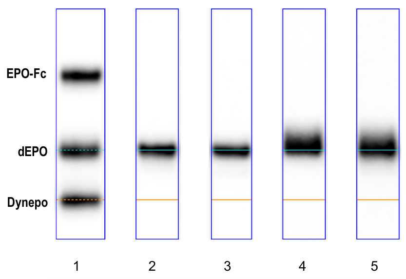
Figure A1. SAR-PAGE separation of different darbepoetin-α (dEPO) biosimilars.
- lane 1: Standard mix of ERA standards (Dynepo, dEPO (Kyowa kirin), EPO-Fc).
- lane 2: Kyowa kirin (Darbepoetin-α Injection Syringe [KKF]).
- lane 3: JCR (Darbepoetin-α BS Injection [JCR] Kissei and JCR Pharmaceuticals Co., Ltd.).
- lane 4: SANWA (Sanwa Kagaku Kenkyusho Co. Ltd.). · lane 5: Mylan (Mylan EPD).
The dotted orange and blue lines indicate the positions of the band apex of Dynepo and dEPO (Aranesp ® ), respectively.
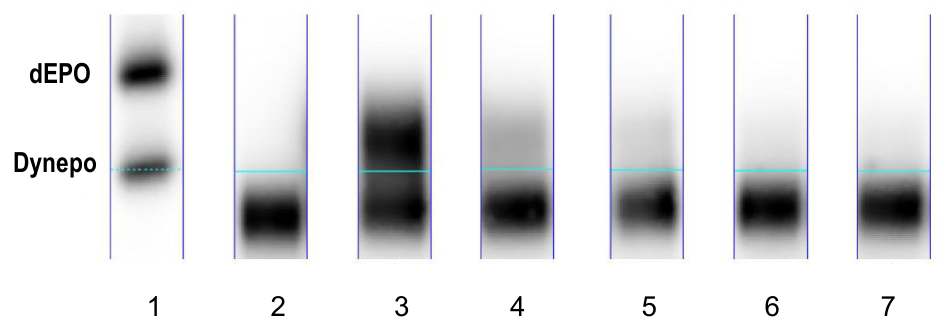
Figure A2. SAR-PAGE separation of Yipuding (Epoetin-α) in serum samples collected at different timepoints after Yipuding administration (10 IU/kg BW, i.v.).
- lane 1: Standard mix of ERA standards (Dynepo, dEPO).
- lane 2: NQC - Blank serum sample containing bEPO.
- lanes 3-7: Mix bands of Yipuding and bEPO in serum samples collected at different points after Yipuding administration: almost completely separated bands can be observed.
The dotted blue line indicates the position of the band apex of Dynepo.
p. 21
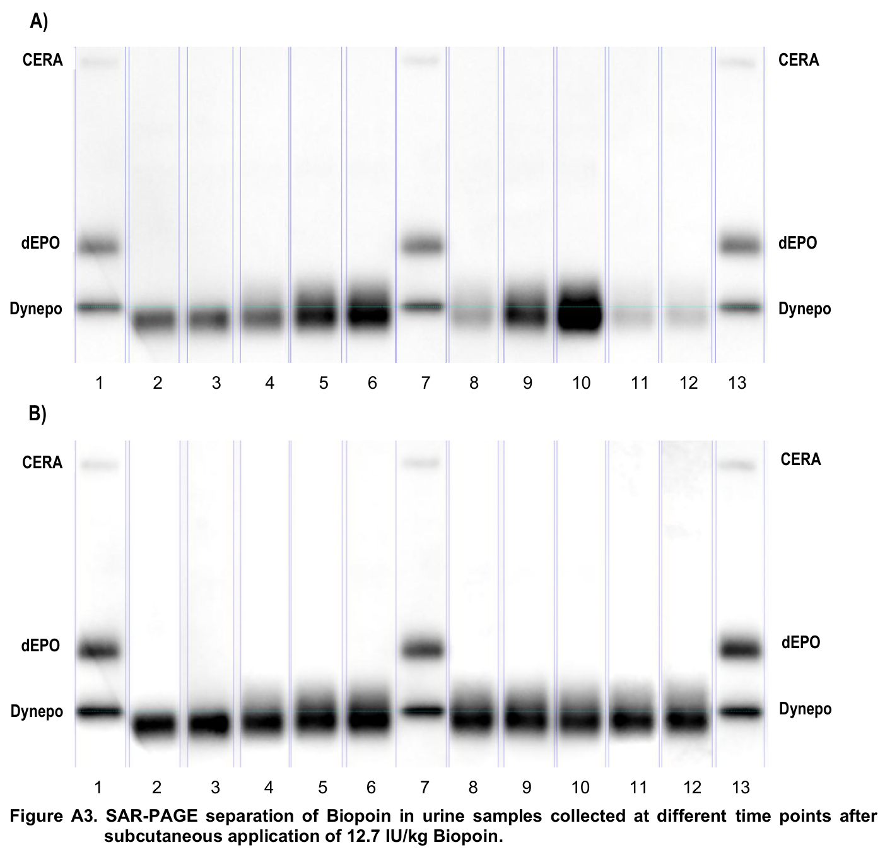
Figure A3. SAR-PAGE separation of Biopoin in urine samples collected at different time points after subcutaneous application of 12.7 IU/kg Biopoin.
A) Image obtained without contrast processing.
B) Same image after contrast optimization with GASepo software v2.1.
- lanes 1, 7, 13: Standard mix of ERA standards (Dynepo, dEPO, CERA).
- lane 2: NQC - Blank urine sample collected prior to the administration of Biopoin containing uEPO.
- lanes 3-6, 8-12: Urine samples collected at different times after administration of Biopoin (uEPO + Biopin at different intensities).
p. 22
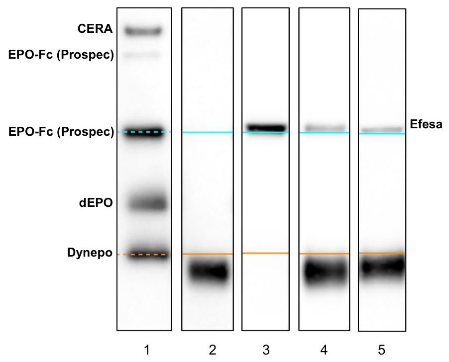
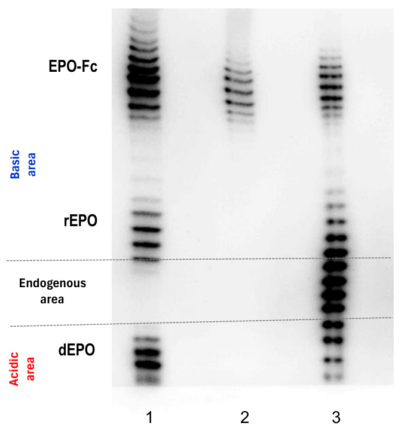
Figure A4. SAR-PAGE separation of Efesa EPO-Fc in urine and serum.
The Efesa migration pattern is the same in both matrices, presenting a single band which runs a bit higher than the lower-molecular weight band of the monomeric EPO-Fc (Prospec).
- lane 1: Standard mix of ERA standards (Dynepo, dEPO, EPO-Fc (Prospec), CERA).
- lane 2: NQC - Blank urine sample containing uEPO.
- lane 3: Efesa standard.
- lane 4: PQC1 - Efesa spiked in urine.
- lane 5: PQC2 - Efesa spiked in serum.
The dotted blue line indicates the position of the band apex of EPO-Fc (Prospec). The dotted red line indicates the position of the band apex of Dynepo.
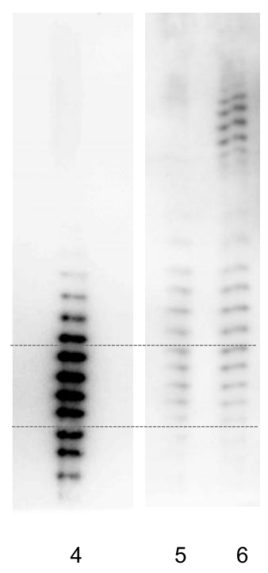
Figure A5. IEF-PAGE separation (pH = 2-8) of Efesa in urine and serum.
- lane 1: Mix of ERA standards: dEPO, rEPO (BRP), EPO-Fc (Prospec).
- lane 2: Efesa reference standard.
- lane 3: PQC1 - Urine sample spiked with Efesa.
- lane 4: NQC1 - Blank urine sample containing uEPO.
- lane 5: NQC2 - Blank serum sample containing bEPO.
- lane 6: PQC2 - Serum spiked with Efesa.
p. 23
ANNEX B - ERA Second Opinion Procedure
1.0 Provision of Second Opinion
a) In the *WADA-*assigned and access-restricted data management system, the Laboratory shall upload:
i. Sample details (including Sample code, sport, sex, Testing Authority (TA), date of Sample collection, date of Sample analysis, matrix of analysis).
ii. Appropriate and sufficient ITP and CP analytical data, including raw gel images (.TIFF) and processed analytical data (GASepo reports).
iii. A summary of the uploaded data using the template "Second Opinion Requests on ERA analysis" (see Annex C to this document).
iv. The Laboratory shall confirm to WADA via email the uploading of all necessary documents.
b) WADA will randomly select two (2) Experts from the WADA EPO Working Group (WG)¹ .
[Comment to Annex B Article 1.b): The List of EPO WG Experts that may provide second opinions on Laboratory findings for ERAs is published on WADA's website, and it may be modified or updated at any time, as determined by WADA.
For Major Events, in particular, WADA may directly pre-select the two (2) Experts if there are not enough eligible Experts (for example, if they are involved in the Analytical Testing process for the Major Event).]
c) Within two (2) business days, the selected Experts should confirm their acceptance or rejection of the assignment.
i. Upon acceptance, WADA will grant the Experts access to the Laboratory documentation.
ii. Within three (3) business days of receiving access to Laboratory documentation, the Expert(s) can request the Laboratory to perform additional analyses on the Sample or provide further information. If no request is made, the Experts shall furnish their second opinion no later than five (5) business days from receiving access to the Laboratory documentation.
¹The following general rules apply to the process of random selection of the Experts providing second opinions:
1- Experts shall not provide second opinions on results generated by their own Laboratory, or if they have been involved in the Analytical Testing of the Sample in any way (for example, when invited as an analyst/Expert by a Laboratory providing Analytical Testing services during Major Events). If the random selection yields an Expert in these situations, the process will be immediately repeated until two (2) independent Experts get selected.
2- The random selection process will also be repeated until it produces two (2) independent Experts when one or more of the selected Experts is not available to provide a second opinion.
3- The provision of a second opinion for an "A" Sample ERA result does not create a conflict for providing a second opinion for the "B" Sample result. In principle, the same two (2) Experts should be involved in the provision of the second opinions for both the "A" and the "B" Sample results (if applicable), unless an Expert(s) is not available for the "B" Sample second opinion process.
p. 24
iii. If a request is made by one (1) Expert, WADA shall inform the other Expert and shall relay the request to the Laboratory. None of the Experts shall furnish a second opinion before reviewing the additional documentation provided by the Laboratory.
iv. The Laboratory shall inform the responsible TA of any additional analysis requests, which shall be considered an integral part of the Analytical Testing process of the Sample. Therefore, costs related to the additional analysis shall be borne by the TA responsible for the Sample under investigation.
v. If additional analyses have been requested, the Laboratory shall provide the additional data within seven (7) business days. However, if the request was only for further information, the Laboratory shall provide it within three (3) business days. WADA should be informed of any expected delays beyond these deadlines (for example, if requested additional analyses must be subcontracted to another Laboratory).
vi. WADA will share the additional data/information documentation with the two (2) Experts.
d) The Experts shall independently² evaluate all data/information and furnish a second opinion only after they have reviewed any additional analytical results and/or information pertaining to the finding. The second opinions should be provided through WADA's data management system within five (5) business days of receiving the complete Laboratory documentation.
e) WADA will promptly grant the Laboratory access to the second opinions received.
²The Experts should produce their second opinions independently from each other, i.e., without consultation between them or with other EPO WG members.
However, there may be circumstances (e.g., rare ERA migration profiles not corresponding to known ERA standards or biosimilars) when an Expert(s) may request a consultation before they can furnish a second opinion. In those cases, the request for consultation shall be made to WADA within three (3) business days of the Expert receiving all Laboratory documentation, including any additional analyses and/or additional information previously requested. The consultation would then take place under the following conditions:
· The consultation shall include three (3) EPO WG Experts (depending on availability), including the two (2) Experts selected for the evaluation of the finding. The third Expert shall be randomly selected by WADA from the pool of remaining available Experts.
· The consultation shall be conducted within five (5) business days of its request, unless otherwise approved by WADA based on exceptional circumstances.
· The final opinion, whether AAF, Negative Finding or ATF shall be unanimous. In case there is no unanimity, the case should be reported as an ATF.
- The outcomes of the consultation, including name (and signatures) of all participating EPO WG Experts and the final conclusion shall be provided to WADA through the WADA-assigned and access-restricted data management system by the Chair of the EPO WG, and if they are not a participating Expert, then by an Expert selected amongst the participants in the consultation.
- WADA will promptly grant the Laboratory access to the final second opinion received, which shall be kept as part of the Sample's record and incorporated in the Laboratory Documentation Package (if requested by the TA, RMA or WADA).
p. 25
f) The Laboratory should report the finding as an AAF, ATF or a Negative Finding in ADAMS (see Article 4.2 of the ISL TD).
g) rEPO findings may be subject to further investigations into whether the apparent presence of rEPO in the Sample is associated with the expression of VAR-EPO (see Annex D).
The establishment of whether the Athlete carries or not the EPO c.577del variant[43] is not subject to the evaluation of the second opinion providers, independently of the procedure applied to test for the presence of VAR-EPO (e.g., DNA analysis, Reverse-Normal Immunopurification (RNI) procedure[44]) This shall be concluded by the Laboratory performing such a procedure.
Therefore, when a second opinion is sought for rEPO, and the Experts' conclusion is that the results from the CP fulfill the identification criteria for the presence of rEPO in the Sample, but such conclusion may require further investigations to determine whether the Athlete is a carrier of VAR-EPO (see Table D1 in Annex D), the second opinion provider shall include a disclaimer specifying that a definitive conclusion about the presence of rEPO in the Sample and the reporting of the finding as an AAF is contingent on having established, through an appropriate investigation (see Article 3.2 of Annex D), that the finding is not associated with the expression of the VAR-EPO.
h) The Laboratory shall keep all second opinions provided, and the WADA reporting instructions, as part of the Sample's record and incorporate them in the Laboratory Documentation Package (if requested by the TA, Results Management Authority (RMA) or WADA).
p. 26
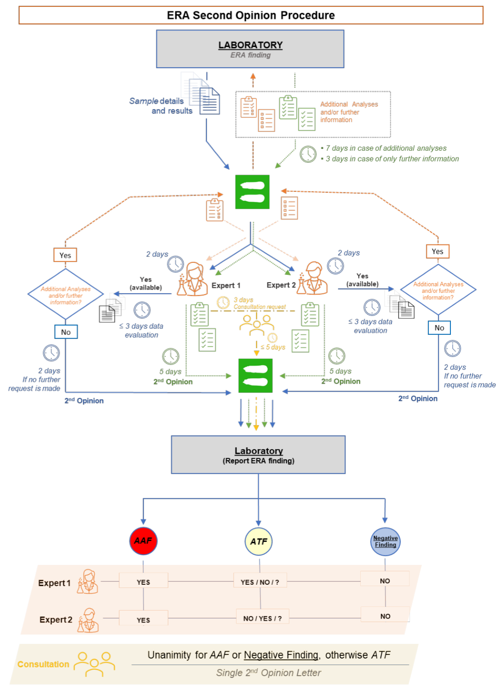
- ERA Second Opinion Procedure
- LABORATORY – ERA finding
- Sample details and results
- Additional Analyses and/or further information: 7 days in case of additional analyses; 3 days in case of only further information
- Expert 1 / Expert 2 (2 days)
- Additional Analyses and/or further information? – Yes (available) / No
- ≤ 3 days data evaluation
- 3 days Consultation request; ≤ 5 days
- 5 days – 2nd Opinion (each Expert)
- 2 days – If no further request is made – 2nd Opinion
- Laboratory (Report ERA finding)
- AAF: Expert 1 YES, Expert 2 YES
- ATF: Expert 1 YES / NO / ?, Expert 2 NO / YES / ?
- Negative Finding: Expert 1 NO, Expert 2 NO
- Unanimity for AAF or Negative Finding, otherwise ATF – Single 2nd Opinion Letter
This diagram is provided as general guidance for the ERA Second Opinion Procedure. In case of contradiction between this diagram and the main text of the ISL TD2027EPO, the instructions provided in the latter shall prevail.
p. 27
Written by:
Reviewed by:
Date:
Document Number:
ISL TD2027EPO
Version Number:
1.0 WADA Science / EPO Working Group
WADA Laboratory Expert Advisory Group
10 September 2026
Approved by:
WADA Executive Committee
Effective Date:
01 January 2027
ANNEX C - Template for Second Opinion Requests on ERA Analysis
Template and GASepo report (CP) to be filled out in English.
Requesting Laboratory
Sample Code (collection)
Laboratory Sample ID (internal code)
Sample collection date
Sample matrix:
Raw image file (.tiff)
Exposure time (s)
Sample volume (mL)
Immunopurification Method e.g., StemCell ELISA, MAIIA, Other specify: Abs (clone, source, catalog number)
Internal Standard (ISTDs)
Electrophoretic method
QCs
Negative QC (NQC)
(Spiked) Positive QC (PQC)
(Excretion) PQC
Blotting (single / double, disulfide bonds reduction)
Detection antibody
Secondary antibody
HRP
Substrate
Additional Comments
Initial Testing Procedure
Details (e.g., PQC(s) prepared with which ERA?) and lane numbers
Confirmation Procedure
p. 28
Date:
Document Number:
Written by:
Reviewed by:
ISL TD2027EPO
Version Number:
1.0 WADA Science / EPO Working Group
WADA Laboratory Expert Advisory Group
10 September 2026
Raw image file (.tiff)
Exposure time (s)
Sample volume (mL)
Immunopurification method: e.g., StemCell ELISA, MAIIA, Other specify: Abs (clone, source, catalog number)
Internal Standard (ISTDs)
Electrophoretic method
QCs
Negative QC (NQC)
(Spiked) Positive QC (PQC)
(Excretion) PQC
Blotting (single / double, disulfide bonds reduction)
Detection antibody
Secondary antibody
HRP
Substrate
Additional Comments Approved by:
WADA Executive Committee
Effective Date:
01 January 2027
Details (e.g., PQC(s) prepared with which ERA?) and lane numbers e.g., Sample volume left
p. 29
ANNEX D - EPO c.577del Variant
1.0 Introduction
The NM_000799.4:c.577del variant in the human EPO gene (dbSNP ID rs369859204), which causes a frameshift (p.Arg193AspfsTer28), has been reported in public databases (e.g., gnomAD, 1000 Genomes Project) with an allele frequency of approximately 0.5 - 1 % in East Asian populations[43]. This variant has not been observed outside of individuals with East Asian ancestry.
This EPO c.577del variant is characterized by a single nucleotide deletion in the last exon (5) of the EPO gene (at position 577 of the coding DNA, near the translation stop codon at position 580 of the coding region), causing a frameshift and the consequent loss of the normal stop codon and the addition of amino acids in another reading frame, thereby changing the length of the mature EPO protein (Figure D1). This changes the last amino acid of the reference protein (NP_000790.2) (Arg193Asp) and adds 26 amino acids, giving a protein that is approximately 3 kDa heavier than the precursor protein. The clinical significance of this variant is uncertain. Importantly, the newly added amino acids do not bring any additional N-glycosylation sites, meaning that both the EPO reference protein (WT-EPO) and the variant protein (VAR-EPO) have the same N-glycosylation pattern.[43]
EPO precursor protein (NP_000790.2) (WT-EPO precursor)
- IC
- GL
Protein predicted from variant coding sequence (VAR-EPO precursor)
Figure D1: Amino acid sequences of the EPO precursor and predicted variant protein.
p. 30
2.0 VAR-EPO and Analytical Testing for EPO
Since the translation of the EPO c.577del allele leads to the expression of a mature EPO protein (VAR-EPO) with a higher molecular weight (MW) of ca. + 3 kDa vs. the reference EPO protein (WT-EPO), this is reflected in a shifted migration of the VAR-EPO band on SAR-/SDS-PAGE gels.
2.1 Analysis of Blood Samples
When blood Samples are analyzed for EPOs by SAR-/SDS-PAGE, the endogenous EPO gel migration from heterozygous individuals that carry both the EPO c.577del variant and EPO reference alleles is characterized by a well-defined double-band pattern, with both bands well separated on the gel (independent of time of Sample collection), see Figure D2.1. The lower band migrates at the same apparent MW as endogenous WT-EPO controls, and the upper band corresponds to a protein with a MW ~3 kDa greater. This contrasts with the characteristic band shape (typical smear above the endogenous WT-EPO) seen for most recombinant EPOs (rEPO), for which the bands of rEPO and WT-EPO are usually not completely resolved, and the relative intensities would change with time after rEPO administration. For individuals that are homozygous for the EPO c.577del variant, the endogenous EPO gel migration would be characterized by a single-band pattern migrating at ~3 kDa greater than the WT-EPO band.
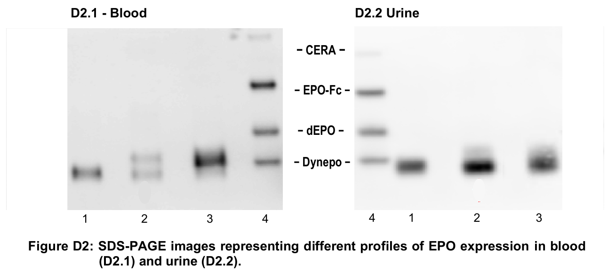
Figure D2: SDS-PAGE images representing different profiles of EPO expression in blood (D2.1) and urine (D2.2).
- lane 1: Homozygous presence of wild-type (WT) bEPO (left) and uEPO (right).
- lane 2: Heterozygous presence of WT-EPO and VAR-EPO. While two well-defined EPO bands are seen in the blood of the EPO c.577del heterozygotic carrier, the upper VAR-EPO band in this individual's urine profile is less well-defined and of less intensity in comparison with the lower WT-EPO band.
- lane 3: PQC - rEPO administration sample from an individual who does not express the VAR-EPO.
- lane 4: Standard mix of ERA standards (Dynepo, dEPO, EPO-Fc, CERA).
p. 31
2.2 Analysis of Urine Samples
While the double-band EPO pattern in blood is characteristic of the presence of the heterozygous EPO c.577del variant, this configuration is not always maintained for the EPO proteins that are excreted in urine (see Figure D2.2). In this case, individuals heterozygous for the EPO c.577del variant may show an EPO migration pattern on SAR-/SDS-PAGE that that closely resembles the pattern observed after rEPO administration in individuals expressing only the WT-EPO (see also Figure 2 in the ISL TD EPO). Therefore, the characteristic band shape (typical smear above the endogenous WT-EPO) of rEPO is not sufficient to discard, a priori, the possibility that the Athlete might be a heterozygous carrier of the EPO c.577del variant.
3.0 Revised Analytical Testing Strategy for rEPO
3.1 Possible Outcomes of Analytical Testing for rEPO in Blood and Urine Samples
Following the application of the SAR- or SDS-PAGE Analytical Method for the analysis of ERAs in a blood or urine "A" Sample, the following analytical outcomes, as applicable to the detection of rEPO, may be possible:
a) On some occasions, the analytical result may be conclusive enough to determine whether the finding constitutes a Negative Finding (e.g., detection of a single band corresponding to WT-EPO), an Atypical Finding (ATF) or an Adverse Analytical Finding (AAF) (e.g., presence of a typical rEPO pattern in a blood Sample).
b) However, on other occasions, further investigations or analyses are necessary to distinguish whether the result is related to the administration of rEPO or to the endogenous expression of the VAR-EPO. For example, it shall be established whether a double-band EPO pattern in blood is caused by an endogenous WT-EPO + VAR-EPO heterozygous phenotype or is the result of the Use of a specific rEPO preparation that may lead to a similar double-band pattern at some point after administration (e.g., similar to the urine profile after Retacrit administration, lane 4, Fig. 2 of the ISL TD EPO).
Refer to Table D1 below for the revised Analytical Testing Strategy for rEPO.
3.1.1 "B" Confirmation Procedures
a) Where the absence of VAR-EPO has been established in the "A" Sample (e.g., by DNA analysis or another Test Method³ ), it is not necessary to repeat the analysis for VAR-EPO expression during the "B" CP. In those cases, it is enough for the "B" CP to detect rEPO to confirm the "A" Sample result.
b) In line with this, if the "A" Sample analysis to determine VAR-EPO expression has been subcontracted to another Laboratory (i.e., other than the Laboratory that performed the "A" CP for rEPO), the "B" CP for rEPO shall be performed by the same Laboratory that conducted the rEPO "A" CP, unless otherwise approved by WADA.
³Such Test Method allowing the direct detection of the VAR-EPO protein (e.g., Reverse-Normal Immunopurification[43-44]) shall be included within the Laboratory's (or the subcontracted Laboratory's) Scope of ISO/IEC 17025 Accreditation.
p. 32
Table D1. Revised Analytical Testing Strategy for rEPO
| SAR-/SDS-PAGE Analytical Result | Blood (serum/plasma/DBS) | Urine |
|---|---|---|
| 1. Single Band (WT-EPO) | Negative Finding (Lane 1, Figure D2.1) | Negative Finding (Lane 1, Figure D2.2) |
| 2. Single Band (VAR-EPO; MW > WT-EPO) (homozygous EPO c.577del variant)ᵃ | Additional investigations/analysesb, c (Upper band, lane 2, Figure D2.1) | N/A |
| 3. Double-band (WT-EPO + VAR-EPO) or (WT-EPO + rEPO) (heterozygous EPO c.577del variant) | Additional investigations/analysesb, c (Lane 2, Figure D2.1) | Additional investigations/analysesᶜ (Lane 2, Figure D2.2 - double band not always seen in urine) |
| 4. Typical smear band of rEPO (rEPO ± WT-EPO) | AAF (Lane 3, Figure D2.1) | Additional investigations/analysesᶜ (Lane 3, Figure D2.2; Figure 2 of the ISL TD EPO) |
N/A: Not applicable to urine.
a. This is an extremely rare event that has been described only once in the gnomAD v2.1.1 database, but which has never been observed in the anti-doping context so far.
b. For blood Samples under investigation, the Laboratory should store, at least, the blood cellular fraction of the "A" Sample for possible DNA analysis, targeting the EPO gene (exon 5 or region encompassing c.577), until the investigation is completed and the result is reported in ADAMS.
c. For both blood and urine Samples, the Laboratory may apply, or subcontract in consultation with the TA, a Test Method that allows the direct detection of the VAR-EPO protein if present in the Sample (e.g., Reverse-Normal Immunopurification[44]).
3.2 Further Investigations to Determine the Cause of a rEPO Finding
When further investigations/analyses are needed as per Table D1 above, the subsequent steps shall be followed (see also flow-chart diagram in Annex E below):
In consideration of the current Laboratory analytical capacity, the investigation steps described below prioritize the most straightforward path to concluding whether the finding has been caused by the Use of rEPO or by the endogenous expression of VAR-EPO. However, the Laboratory, in consultation with the TA, may choose at any time (upon analytical capacity and logistic considerations) to go for additional analyses of the Athlete's Sample(s) to investigate the expression of VAR-EPO and/or Use of rEPO.
3.2.1 Use of Reverse-Normal Immunopurification Method as Confirmation Procedure
When a Presumptive Adverse Analytical Finding (PAAF) for rEPO is directly subject to confirmation analysis by the Laboratory through the application of the Reverse-Normal Immunopurification (RNI) method, the Laboratory shall:
a) Report the finding as a Negative Finding if the RNI CP confirms the presence of VAR-EPO.
b) Initiate the Second Opinion Procedure (see Annex B) for evaluation of the rEPO finding if the CP confirms the presence of rEPO in the absence of VAR-EPO.
p. 33
[Comment 1 to Annex D Article 3.2.1: The RNI Method is not a mandatory Analytical Testing Procedure. However, if the Laboratory does not have the analytical capacity to perform such analysis, then the analysis can be subcontracted, in consultation with the TA, to another Laboratory. The subcontracted Laboratory shall have the Test Method included within its Scope of ISO/IEC 17025 Accreditation. Costs related to the RNI analysis shall be borne by the TA responsible for the Sample under investigation.]
[Comment 2 to Annex D Article 3.2.1: The establishment of whether the Athlete carries or not the EPO c.577del variant is not subject to the evaluation of the second opinion providers, independently of the procedure applied to test for the presence of VAR-EPO. This shall be concluded by the Laboratory performing such a procedure.]
3.2.2 Use of Regular SAR-/SDS-PAGE Method as Confirmation Procedure
The confirmation of rEPO findings through the application of the regular SAR-/SDS-PAGE procedure cannot directly determine the presence or absence of VAR-EPO in the Sample. Therefore, following the conclusion of the CP, the Laboratory shall inform WADA of the presumptive rEPO finding including:
- Sample code,
- Sport,
- Sex,
- TA, and
- Date of Sample collection.
So that WADA can verify if the Athlete has already been ascertained as a carrier of the EPO c.577del variant⁴ :
a) The Athlete has already been identified as a carrier of EPO c.577del variant
WADA will instruct the Laboratory to report the finding as a Negative Finding without the need to subject the results to a Second Opinion Procedure. The Laboratory shall keep WADA's reporting instruction letter as part of the Sample's record.
b) The Athlete does not carry the EPO c.577del variant
WADA shall instruct the Laboratory to initiate the Second Opinion Procedure (see Annex B) for evaluation of the finding.
i. If the second opinion providers conclude the finding as a Negative Finding, the Laboratory should report the finding accordingly.
⁴Whether the Athlete carries or not the EPO c.577del variant may be established in the Sample under investigation or in another Sample collected from the Athlete either through DNA analysis[45-46] targeting the EPO gene (exon 5 or region encompassing c.577 - see Annex D Article 3.2.1 below) or by applying a Test Method, such as the Reverse-Normal Immunopurification, allowing to test for the presence of the VAR-EPO protein in the Sample[44].
In addition to DNA or Reverse-Normal Immunopurification analysis, the absence of VAR-EPO expression may be established by ERA analysis in blood: either a single band of WT-EPO or a typical smear band of rEPO ± WT-EPO will demonstrate the absence of VAR-EPO
p. 34
ii. If the second opinion providers conclude an AAF or ATF for rEPO in a Sample from an Athlete that does not carry the EPO c.577del variant, as confirmed by WADA, WADA will instruct the Laboratory to report the finding accordingly. The Laboratory shall keep WADA's reporting instruction letter as part of the Sample's record.
c) There is no information about whether the Athlete carries the EPO c.577del variant:
WADA shall instruct the Laboratory to initiate the Second Opinion Procedure (see Annex B) for evaluation of the finding.
i. If the second opinion providers conclude an ATF for rEPO in a Sample from an Athlete for whom there is no information about the expression or not of the EPO c.577del variant, WADA will instruct the Laboratory to report the finding as an ATF.
However, if the Laboratory decides to conclude the finding as an AAF in disagreement with an ATF conclusion by the second opinion providers, WADA will instruct the Laboratory not to report the finding until the investigation on VAR-EPO expression described in Annex D Article 3.2.3 below is completed and WADA informs the Laboratory.
ii. If the second opinion providers conclude a potential AAF for rEPO in a Sample from an Athlete for whom there is no information about the expression or not of the EPO c.577del variant, WADA will instruct the Laboratory not to report the finding until the investigation on VAR-EPO expression described in Annex D Article 3.2.3 below is completed and WADA informs the Laboratory accordingly.
3.2.3 Testing for presence or absence of VAR-EPO
The Laboratory, in consultation with the TA, shall decide on the analytical approach to be applied to determine whether the Athlete expresses the EPO c.577del variant[44-46], and inform WADA accordingly.
a) DNA or Reverse-Normal Immunopurification analysis
DNA (see Annex D Article 3.2.3.1) or RNI analysis on the Sample under investigation or another Sample previously collected from the Athlete shall be considered, where possible.
b) ERA analysis of previously collected blood Samples
If neither DNA nor RNI analysis on available Athlete Sample(s) is viable, and a previously collected blood Sample is available in a Laboratory (as determined by WADA) but has not been analyzed for ERAs, WADA will request that such Sample be analyzed for ERAs as soon as possible and ask the Laboratory to notify the TA accordingly.
p. 35
This may also apply to blood Samples that have been placed in long-term storage and which may be subject to Further Analysis⁵ .
Following analysis of such Sample for ERAs, the results shall be considered by WADA regarding the possible absence of VAR-EPO expression (see explanatory footnote 4 above). If the absence of VAR-EPO expression is confirmed, then the rEPO finding shall be evaluated as per Annex D Article 3.2.2 b) above.
c) Collection of New Sample(s).
If neither approach to test for VAR-EPO expression is viable, or if the ERA analysis of previously collected blood Samples is not conclusive about the absence of VAR-EPO expression, WADA will instruct the Laboratory to report the presumptive rEPO finding under investigation as an ATF, with a comment that it is pending additional investigations into whether the Athlete carries the EPO c.577del variant and recommending the collection of a follow-up Sample(s) for ERA analysis.
i. WADA will request the responsible TA, or another TA with jurisdiction over the Athlete, to collect follow-up blood and urine Samples ("A" and "B") and send them for ERA analysis, if possible, to the same Laboratory.
ii. The responsible TA shall make every effort to collect the follow-up Sample(s) within a reasonable timeframe (e.g., within two (2) weeks of WADA's request). However, when this is not possible or if the TA does not respond satisfactorily to WADA's requests, WADA shall request another TA with jurisdiction over the Athlete to collect the Sample(s) (for example, the sport International Federation, the organizer of a Major Event where the Athlete is due to participate, the National Anti-Doping Organization (NADO) of a country where the Athlete is scheduled to compete or train, etc.). The TA(s) tasked with collecting the follow-up Sample(s) shall regularly keep WADA informed as to the status of those efforts.
iii. Following the collection and ERA analysis on such Sample(s), the results of the ERA analysis, and the conduct of any additional analyses, if necessary, shall be considered by WADA.
iv. When the additional analyses performed on the follow-up Sample(s) conclude the absence of VAR-EPO expression, WADA will instruct the Laboratory to revise the Test Report in ADAMS changing the conclusion from ATF to an AAF for rEPO, where applicable (i.e., if previously determined as an AAF during the Second Opinion Procedure), and include a comment clarifying that the reason for the change is that "further investigations have established that the Athlete is not a carrier of the EPO c.577del variant".
⁵If the available blood Sample was the cause of a previous Code Article 2.1 Anti-doping Rule Violation, and that case has not been finally resolved, then WADA shall proceed as if no previous blood Sample was available; see Annex D Article 3.2.3 point (c) - Collection of New Sample(s).
p. 36
v. Conversely, when the additional analyses performed on the follow-up Sample(s) reveal the expression of VAR-EPO, WADA will instruct the Laboratory to revise the Test Report in ADAMS changing the conclusion from ATF to a Negative Finding for rEPO and include a comment clarifying that the reason for the change is that "further investigations have established that the Athlete is a carrier of the EPO c.577del variant".
3.2.3.1 DNA Tests for Identification of VAR-EPO Carriers.
a) The DNA sequencing analysis (e.g., Sanger) shall target the EPO gene (exon 5 or region encompassing c.577).
b) The analysis shall be performed by the Laboratory (if the method is included in its Scope of ISO/IEC 17025 Accreditation) or subcontracted to another Laboratory (which has the method included in its Scope of ISO/IEC 17025 Accreditation) or, if necessary, to a WADA-approved laboratory (which has the method included in its Scope of ISO/IEC 17025 Accreditation).
c) The DNA analysis should be done, if possible, on the Sample under investigation, on previously collected Sample(s) or, if needed, on newly collected Sample(s).
d) Priority should be given to the use of whole blood or DBS Samples, if available. However, the Laboratory, in consultation with the TA, may also consider the possibility of conducting the DNA analysis in urine Samples[45,46] The Laboratory shall inform WADA of the Samples used for DNA analysis.
e) Costs related to the EPO sequencing analysis shall be borne by the TA responsible for the Sample under investigation.
f) The determination of whether the Athlete is a carrier of the EPO c.577del variant by DNA analysis shall be based on conclusive results.
g) EPO sequencing results shall be submitted by the Laboratory to WADA to evaluate whether or not the Athlete is a carrier of the EPO c.577del variant. The transfer of results to WADA shall be done securely in the manner specified by WADA and respecting the confidentiality of the analytical data.
p. 37
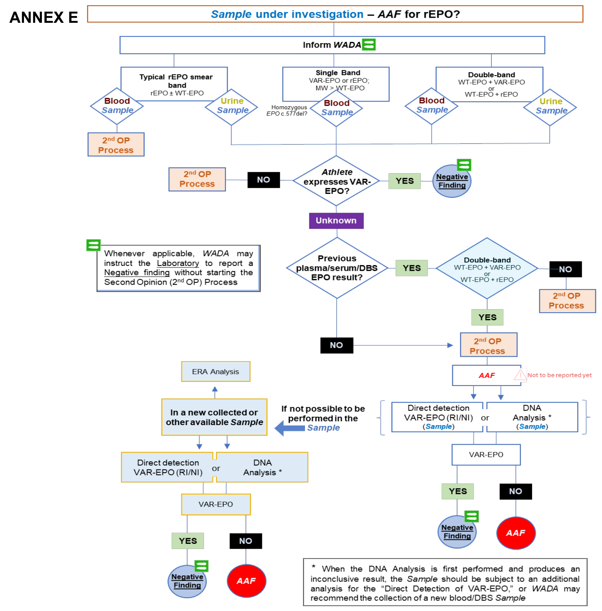
- Sample under investigation – AAF for rEPO?
- Inform WADA
- Typical rEPO smear band (rEPO ± WT-EPO) – Blood Sample / Urine Sample → 2nd OP Process
- Single Band (VAR-EPO or rEPO; MW > WT-EPO) – Blood Sample (Homozygous EPO c.577del?)
- Double-band (WT-EPO + VAR-EPO or WT-EPO + rEPO) – Blood Sample / Urine Sample
- Athlete expresses VAR-EPO? – YES: Negative Finding; NO: 2nd OP Process; Unknown
- Previous plasma/serum/DBS EPO result? – YES: Double-band (WT-EPO + VAR-EPO or WT-EPO + rEPO) – YES: 2nd OP Process, NO: 2nd OP Process; NO: 2nd OP Process
- 2nd OP Process → AAF (Not to be reported yet)
- Direct detection VAR-EPO (RI/NI) (Sample) or DNA Analysis * (Sample) → VAR-EPO – YES: Negative Finding; NO: AAF
- If not possible to be performed in the Sample: In a new collected or other available Sample – Direct detection VAR-EPO (RI/NI) or DNA Analysis * → VAR-EPO – YES: Negative Finding; NO: AAF; ERA Analysis
- Whenever applicable, WADA may instruct the Laboratory to report a Negative finding without starting the Second Opinion (2nd OP) Process
- * When the DNA Analysis is first performed and produces an inconclusive result, the Sample should be subject to an additional analysis for the "Direct Detection of VAR-EPO," or WADA may recommend the collection of a new blood/DBS Sample
This Annex E diagram is provided as general guidance for the performance of investigations on the possible expression of the VAR-EPO. In case of a contradiction between this diagram and the text in Annex D, the instructions provided in the latter shall prevail.
Retrieved on 26 November 2026 from https://www.wada-ama.org/sites/default/files/2026-09/isl_td2027epo_v1.0_eng_clean_version.pdf